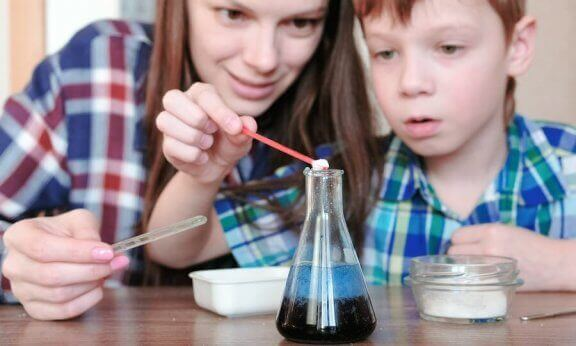
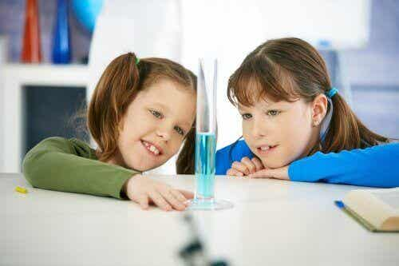

Construir o aprendizado com as próprias mãos sempre é a melhor opção. Portanto, na hora de ensinar as propriedades da água, o ideal é fazer por meio de experimentos divertidos e fáceis que as crianças jamais esquecerão.
Inevitavelmente, as crianças devem aprender algumas leis básicas de física e química ao longo da vida. A melhor maneira de aprender é de forma lúdica. Por isso, tente fazer em casa alguns experimentos com água para crianças.
Existem algumas experiências simples que você pode fazer com a criança mesmo em casa. Assim, é possível apresentar o mundo mágico da ciência de uma maneira divertida.
A experimentação é a melhor maneira de explicar a ciência. Para as crianças, isso é ótimo, já que dessa forma podemos despertar a sua curiosidade e o seu interesse pelos fenômenos científicos.
A seguir vamos sugerir algumas atividades com um pé na ciência que você pode fazer em casa para se divertir com o seu filho.
Para este experimento, você precisa de:
Isso é chamado de tensão superficial e é o que permite à pimenta flutuar. O sabão, por sua vez, faz com que essa camada diminua interferindo nas forças de coesão.
Quando a tensão é rompida, a pimenta não tem como se sustentar. Assim, começará a se afastar, seja para o fundo do prato ou em direção às bordas.
Você vai precisar de:
Os líquidos com mais moléculas, isto é, com uma densidade mais elevada, são mais pesados. Isso fará com que fiquem no fundo da garrafa. Os líquidos mais leves, por sua vez, ficarão em cima, sem que se misturem entre si.
O experimento desperta a curiosidade e o interesse das crianças pelos fenômenos científicos.
A água é a essência da nossa vida e do nosso planeta. Assim, através dessas experiências com água para crianças, podemos destacar a sua importância e apreciar as suas propriedades.
Os experimentos com água para crianças, além de muito econômicos e divertidos, são bastante educativos. O valor agregado nesse tipo de atividade é muito importante.